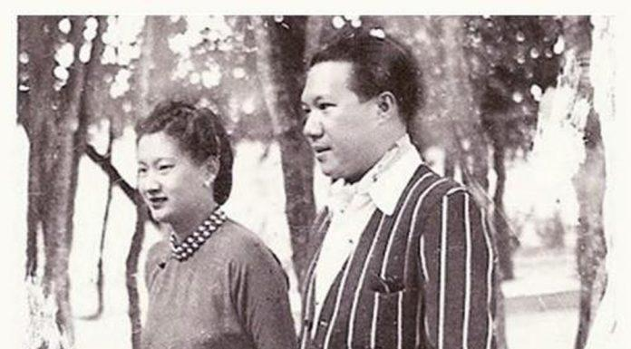

Năm 1926, khi Nguyễn Hữu Thị Lan bước vào tuổi mười hai, cô phải sống xa gia đình để tiếp tục công việc học hành.
Lúc đó, chị gái cô, Agnès Nguyễn Hữu Hào đã lập gia đình. Chồng bà là bá tước Pierre Didelot, một người thuộc giới quý tộc Pháp. Sau này ông là Khâm mạng Hoàng triều Cương thổ. Ông bà có năm người con cả trai lẫn gái. Những năm hoàng hậu Nam Phương sống ở Huế và Đà Lạt, bà vẫn luôn bên cạnh em gái. Hai chị em rất thương yêu nhau, tận tình giúp đỡ nhau. Sau ngày Nhật đảo chính Pháp vào tháng 3 năm 1945, vì Bảo Đại và Nam Phương phải ở Huế, các con của họ vẫn ở Đà Lạt với bà dì. Ngày hôm sau cuộc đảo chính, một đại tá Nhật mời bà bá tước về Huế. Chuyến đi từ Đà Lạt về Huế có sáu trăm cây số phải kéo dài tới ba ngày. Ngoài bà bá tước còn có các con của bà và các con của hoàng hậu Nam Phương. Trên đường đi có cả một tiểu đội lính hộ vệ. Tất cả các cầu trên đường bị đánh sập, đường bị máy bay Mỹ ném bom hư hỏng nhiều chỗ. Nhưng may mắn là họ đã về đến Huế an toàn. Bà bá tước và trẻ con phải về ở tạm một căn nhà rồi tìm cách liên lạc với em gái bà sau.
Hai vợ chồng bà Agnès sống rất nhiều năm tại Việt Nam. Mãi sau này, bà mới sang sống tại Pháp. Bà Agnès về tài và sắc đều không bằng bà hoàng hậu Nam Phương nhưng bà lại có một cuộc sống hạnh phúc nhẹ nhàng. Về già bà cũng mắc bệnh điếc hơn nữa bà có vẻ Tây hơn cô em nên trong giao tiếp cũng tỏ ra lạnh lùng hơn.
Tình cảm giữa hai chị em gái vẫn luôn mặn nồng, thắm thiết, mối liên lạc giữa họ vẫn duy trì đều đặn. Bà Agnès rất yêu thương cô Lan vì vậy rất yêu quý năm đứa cháu của mình, đặc biệt là Bảo Long. Ngược lại cô Lan cũng hết sức yêu thương người chị gái. Chính vì vậy, về sau này, khi cô Lan không còn nữa, các con cô vẫn giữ sợi dây tình cảm nồng đượm với người chị gái của mẹ.
Sau cái chết đột ngột của cô em gái, bà Agnès đau đớn đến tột cùng, có phần nào trách cứ sự vô tình của Bảo Đại và không còn muốn liên lạc với ông nữa.
Về phần Nguyễn Hữu Thị Lan, năm mười hai tuổi, cô được gia đình cho sang Pháp, ghi danh học tại trường Les Oiseaux de Neuilly, một trường nữ danh tiếng tại Paris, dành cho con cái các nhà giàu có, do các nữ tu điều hành. Nghe nói đây là một trường có nền giáo dục chuẩn mực và tốt. Nhưng vì học sinh của trường hầu hết là người theo đạo Thiên Chúa giáo vì vậy họ ít tiếp xúc với học sinh các trường không tôn giáo. Ngoài những giờ học văn hóa như ở các trường khác, các nữ tu ở trường còn dạy cho học sinh cách sống, cách cư xử với mọi người đặc biệt là cách giao tiếp để tỏ lòng tôn kính đối với các bậc quân vương. Vì trường chỉ toàn là học sinh nữ, lại chỉ tiếp xúc với các nữ tu sĩ nên cuộc sống tình cảm của họ cũng đơn giản. Lan lại là một học sinh ngoan ngoãn, chăm chỉ, thông minh nên thường được các nữ tu có những lời nhận xét tốt đẹp. Mẹ Bề trên, giám đốc trường dòng và các nữ tu sĩ tỏ ra yêu mến cô.
Tất cả các nữ sinh của trường đều ở nội trú. Cũng như các bạn, giường của Lan có treo bức ảnh chân dung Đức Mẹ Đồng Trinh.
Trước khi đi ngủ, Lan có thói quen làm vệ sinh cá nhân. Sau đó là cầu nguyện. Nữ tu sĩ Anne-Marie đi một lượt các phòng ở dãy nhà A của Lan. Khi đến phòng Lan bao giờ bà cũng ôm hôn cô âu yếm và kéo chăn đắp cho cô, bày cho cô cách giữ ấm.
Sáng sớm, tiếng chuông inh ỏi vang lên như kéo Lan ra khỏi giấc ngủ. Lúc đó mới 6 giờ 30 phút sáng, tất cả mọi người cùng đánh răng, rửa mặt. Tất cả lại cùng cầu nguyện cho một ngày mới bắt đầu. Phòng ăn sáng ở tầng trệt, quay ra một khu vườn đẹp. Bữa sáng của mỗi người là một cốc sữa, một lát bánh mỳ và một quả trứng chần nước sôi. Tất cả nữ sinh đều ăn trong yên lặng, cũng như khi ở phòng mình. Sau đó, họ gặp nhau ở lớp học. Tất cả đều mặc cùng một loại váy dài màu xanh nước biển. Sự khác nhau duy nhất giữa họ là màu sắc của dải ruy băng trang trí trên cổ áo: màu hồng cho các em bé đến lớp năm, màu vàng cho các em từ lớp sáu đến lớp chín và màu tím cho các nữ sinh trung học.
Chương trình học của lớp Lan, có nghĩa là lớp sáu bao gồm tiếng Pháp, chính tả, ngữ pháp, viết luận, tiếng Anh, lịch sử địa lý, sinh học, toán v.v... Lan còn nhớ bài chính tả đầu tiên có tên là: Một cơn gió xoáy ở vùng biển Đại Tây Dương (Un cyclone dans l’Atlantique). Lan chẳng hiểu Un cyclone là gì và chẳng biết gì về Đại Tây Dương. Cô viết theo phiên âm.
Lúc nữ tu sĩ, cô giáo Laurence chữa bài, cô cười phá lên:
Các con hãy xem, chưa bao giờ ta hình dung được là có ai đó có thể mắc nhiều lỗi như vậy trong một bài chính tả.
Rồi cô quay sang Lan:
Lan, con không biết cơn gió xoáy là gì à?
Lan đỏ mặt, cúi đầu xuống, đáp lời cô:
Dạ thưa mẹ, con không biết ạ.
Buổi trưa, tất cả học sinh xuống phòng ăn. Sau đó lại quay lại lớp học.
Một phần ba thời gian là học về giáo lý Cơ đốc. Lan cũng như các bạn phải cố gắng học thuộc lòng. Ngoài ra các môn bắt buộc còn là khâu vá, cách cư xử tốt đẹp: cách đối xử cung kính được thể hiện trong những tình huống nào, xử sự thế nào trong một dịp sinh nhật, cách chào bạn của cha mẹ mình... Mỗi ngày, lớp của Lan được học ít nhất mười hai cách xử sự như thế.
Khi được nhiều điểm tốt trong một tuần, Lan có thể được phép về nhà cậu mợ Denis Lê Phát An vào chiều thứ bảy sau buổi học sáng. Nếu không Lan phải ở lại trường dòng. Vào ngày chủ nhật, Lan thường dự lễ tổ chức tại nhà thờ.
Những giờ tự học, Lan làm việc thật nhiều. Cô kiên trì, miệt mài học không biết mệt. Chẳng bao lâu sau, Lan đã trở thành một học sinh giỏi. Cô không thích toán lắm nhưng rất yêu tiếng Pháp. Sau một năm học, Lan đã là một trong những học sinh xuất sắc của lớp.
Một lần, các nữ tu của trường tổ chức cho học sinh đi tham quan nhà thờ Đức bà Paris khi năm học thứ ba của Lan vừa mới bắt đầu.
Hôm đó là ngày thứ bảy, tiết trời thu mát dịu, dễ chịu. Trước khi đi, Mẹ Bề trên tập hợp các nữ sinh lại và nói:
Hôm nay nhà trường tổ chức cho các con đi tham quan nhà thờ Đức bà Paris. Đó là một trong những kiến trúc nổi tiếng nhất thế giới, là một nhà thờ Thiên Chúa giáo tiêu biểu cho phong cách kiến trúc gothique nằm ở đảo Thị thành (Île de la Cité), giữa sông Seine nơi con sông tự chia làm hai nhánh.
Tất cả các nữ sinh rất phấn khởi, hồi hộp chuẩn bị cho chuyến đi. Là một học sinh ham đọc, thích tìm hiểu, dọc đường đi Lan không ngớt đặt những câu hỏi cùng nữ tu sĩ Catherine, một cô giáo xinh đẹp, tóc nâu, mắt màu hung, có giọng nói ấm áp, dễ thương. Cô là một trong những nữ tu thông minh, có kiến thức rộng lại luôn tỏ ra dễ mến, nhân từ. Ngồi cạnh nữ tu, Lan ôn tồn hỏi:
- Thưa mẹ, mẹ có thể nói cho con biết những nét chính về Nhà thờ Đức bà Paris được không?
Nữ tu sĩ nhẹ nhàng đáp lời Lan:
- Được con ạ. Nhà thờ bắt đầu được xây dựng từ năm 1163 dưới thời vua Louis VII, kéo dài hai thế kỷ, tới năm 1345 mới hoàn thành. Trải qua những cuộc thăng trầm biến động của lịch sử, nhà thờ vẫn không bị thay đổi nhiều loại trừ sự phá hoại vào năm 1793 và trong cuộc cách mạng Pháp.
- Thưa mẹ, nhà thờ đã được cải tạo lần nào chưa ạ?
- Rồi con ạ. Năm 1845, Nhà thờ đã có một cuộc sửa chữa lớn và hoàn tất vào năm 1863 dưới sự hướng dẫn của kiến trúc sư Jean - Baptiste Lassus và sau khi kiến trúc sư này qua đời, người kế nhiệm việc xây dựng là Công tước Eugène Viollet. Công tước đã cho xây thêm tháp nhọn, đặt thêm những bức phù điêu, tượng điêu khắc, tranh kính màu… vào trong nhà thờ. Trong số đó có một bức tượng điêu khắc của chính ông đang hướng vào nhà thờ và nhìn lên phía bầu trời bao la. Trong suốt thời kỳ công xã Paris và thời gian diễn ra chiến tranh Thế giới lần thứ hai, những ô kính màu lớn của nhà thờ vẫn được các tu sĩ và người dân cố gắng giữ nguyên vẹn.
- Thưa mẹ, thế có sự kiện gì đặc biệt diễn ra trong nhà thờ này không ạ?
- Có chứ. Đó là năm 1804, Napoléon Bonaparte đã tự phong cho mình làm hoàng đế ngay trong nhà thờ lịch sử này.
Tiếng xe chầm chậm tiến vào sân nhà thờ đã cắt ngang câu trả lời của cô giáo, nữ tu sĩ Catherine. Khi đến trước nhà thờ, bà Catherine chỉ cho Lan và các bạn xem một miếng kim loại tròn, dày đặt trên nền gạch sân nhà thờ rồi nói:
Các con chú ý xem, đây là điểm trung tâm của Paris. Người ta lấy nhà thờ Đức bà Paris làm tâm điểm để tính chiều dài từ Paris đi các nơi và ngược lại.
Sau đó bà Catherine dẫn các nữ sinh vào trong Nhà thờ, giới thiệu chi tiết với các em về kiến trúc, lịch sử… Rồi bà không quên dặn họ:
Còn nhiều điều rất hay, rất hấp dẫn về kiến trúc và lịch sử của nhà thờ nổi tiếng này, ta khuyên các con nên tìm đọc cuốn tiểu thuyết lịch sử của đại văn hào Victor Hugo, có tựa đề trùng với tên nhà thờ Đức bà Paris.
Nghe tới đó, Lan tiến lại gần bà Catherine và hỏi:
- Thưa mẹ, có phải đây là nhà thờ lớn nhất nước Pháp không ạ?
Nhà thờ Đức bà Paris là nhà thờ nổi tiếng nhất và kiến trúc đẹp nhất nhưng lại không phải là nhà thờ lớn nhất nước Pháp. Sau này có dịp ta sẽ đưa các con tới thăm và dự lễ tại nhà thờ Đức bà Amiens nằm ở thành phố Amiens, miền bắc nước Pháp. Đó mới là nhà thờ lớn nhất nước Pháp và là một trong những nhà thờ lớn nhất thế giới. Cùng với nhà thờ Đức bà Chartres và nhà thờ Đức bà Reims, nhà thờ Đức bà Amiens được coi là công trình kiểu kiến trúc gothique, đẹp nhất của Pháp.
Lan lại tiếp tục:
Thưa mẹ, vậy nhà thờ Đức bà Paris ra đời trước hay sau nhà thờ Đức bà Amiens?
- Nhà thờ Đức bà Paris khởi công trước nhà thờ Đức bà Amiens hơn nửa thế kỷ nhưng lại hoàn thành sau bởi việc xây dựng nhà thờ Đức bà Paris đã kéo dài rất lâu. Năm 1220, nhà thờ Đức bà Amiens được khởi công xây dựng. Gian giữa nhà thờ được hoàn thành năm 1236 còn các ngọn tháp và hành lang thì phải chờ tới năm 1243. Năm 1528, đỉnh tháp cao hơn 112 mét của nhà thờ mới được hoàn chỉnh. Nhà thờ dài 145 mét. Gian giữa rộng gần 15 mét còn cánh ngang rộng 70 mét, có mái vòm cao gần 43 mét, diện tích mặt sàn của là 7.700 mét vuông, có thể tích là 200.000 mét khối.
- Con cám ơn mẹ.
Trở về trường, nghe lời nữ tu sĩ Catherine, Lan vội tìm đọc ngay cuốn tiểu thuyết “Nhà thờ Đức bà Paris” của nhà văn, nhà thơ, nhà viết kịch nổi tiếng Victor Hugo, được xuất bản năm 1831.
Suốt mấy ngày đêm liền, cứ sau giờ học Lan lại lao vào đọc, nghiền ngẫm cuốn sách. Cuốn tiểu thuyết như đưa Lan trở về với thời kỳ trung cổ của Pháp. Đó là sự phục hồi thật kỳ diệu đô thành Paris cổ kính vào cuối thế kỷ XV. Victor Hugo, với trí óc tưởng tượng mầu nhiệm, phóng khoáng đã tạo ra sự rung động hoài cổ cho cả thế hệ độc giả. Tòa nhà thờ lớn đứng sừng sững giữa tác phẩm như một người khổng lồ bằng đá, hòa trộn ít nhiều huyền bí với linh hồn các nhân vật khác nhau. Trong cuốn truyện u ám màu trung cổ này, các nhân vật giày xéo, đè bẹp, nghiền nát nhau vì một lực lượng tối thượng, vô hình và tàn bạo.
Khi kết thúc cuốn tiểu thuyết, Lan đã thổn thức, cô khóc thương cho số phận của Esméralda, một cô gái Bohémien xinh đẹp đã yêu Phoebus một cách mù quáng, người đã cứu cô thoát khỏi vụ bắt cóc do phó giám mục Nhà thờ Claudo Frollo tổ chức và chàng gù Quasimodo thực hiện. Trong thực tế, Phoebus là một gã Sở Khanh ăn chơi đàng điếm, đã có hôn thê là một tiểu thư quý tộc. Cô xót xa cho số phận của Quasimodo, anh chàng gù vừa mù vừa chột, vừa thọt, tiêu biểu cho vẻ đẹp tâm hồn và sự tận tụy. Trong nhà thờ, chàng đã che chở và bảo vệ cho Esméralda sống bình yên.
Gấp cuốn truyện lại, Lan đã viết vào cuốn sổ nhật ký của mình: “Hôm nay ta đã hoàn thành cuốn tiếu thuyết lịch sử thật hay của đại văn hào Victor Hugo “Nhà thờ Đức bà Paris”. Mỗi nhân vật trong đó là một số phận và những số phận đan chéo nhau. Một Claudo Frollo đạo hạnh, uyên bác nhưng xanh xao u uất vì nếp sống tu hành. Một Quasimodo tâm hồn hoang dã, không biết gì về thế giới con người đã bắt đầu yêu, một tình yêu bất diệt không cần đền đáp khi vẻ đẹp và tấm lòng khoan dung của Esméralda đã làm thức tỉnh trái tim xơ cứng và hoen rỉ của chàng. Một Esméralda xinh đẹp đến nao lòng đã bị kết án oan chỉ vì ngây thơ, nhẹ dạ, tin người và tốt bụng… Victor Hugo đúng là một nhà văn vĩ đại. Câu chuyện của ông thật xúc động lòng người. Đúng như nhà sử học Jules Michelet đã nhận xét vào năm 1833: “Cạnh ngôi nhà thờ lớn cổ kính, Victor Hugo xây dựng một tòa nhà thờ lớn bằng thi ca, cũng vững chắc như nền móng, cũng ngất cao như dãy tháp của nhà thờ nọ”. Còn Théophine Gauthier, một đệ tử cuồng nhiệt của chủ nghĩa lãng mạn, sau này trở thành một tên tuổi trong số những nhà văn, nhà thơ Pháp nổi tiếng thế kỷ thứ mười chín, đã nói về tiểu thuyết Nhà thờ Đức bà Paris: “Cuốn tiểu thuyết này là một thiên anh hùng ca Iliat thật sự, ngay từ bây giờ nó đã thành một tác phẩm kinh điển.”
Ngoài những giờ học, Lan còn đi lễ nhà thờ, tham gia các hoạt động của trường. Cô yêu thích cả thể thao và âm nhạc. Cô học thêm về âm nhạc, chơi đàn dương cầm, chơi bóng bàn. Mỗi lần về chơi với cậu mợ cô, ông bà Denis Lê Phát An còn dẫn cô đi chơi tennis, bơi lội và khiêu vũ. Lan rất ham thích các hình thức giải trí này và tỏ ra là người có năng khiếu. Nhờ được học ở một trường danh tiếng như vậy mà Nguyễn Hữu Thị Lan là một cô gái được phát triển toàn diện
Là một trong những học sinh giỏi của trường, năm 1930, cô được bầu là hoa hậu Đông dương khi mới tròn mười sáu tuổi. Và nghe nói, hai năm tiếp theo, cô đều đạt danh hiệu cao quý này. Điều đó chứng tỏ cô có một vẻ đẹp duyên dáng hiếm có. Một vẻ đẹp trang trọng, quý phái nhưng dung dị, hiền từ, dịu dàng Đông phương. Sống mũi cao thẳng, đôi mắt có vẻ buồn tỏa ra một nét đẹp kín đáo, thẳng thắn, đầy độ lượng, có sức thu hút khó quên. Phóng viên báo Colonial (Thuộc địa) những năm đầu 1930 đã phải thốt lên: “Với dáng thanh lịch của riêng mình chứng tỏ một thị hiếu tinh tế và vững vàng, với chiếc áo dài dạ hội có những đường nét thuần khiết, màu sắc thanh nhã mà hòa hợp, chiếc áo nịt lót vừa khít với người, nàng xinh đẹp như một bông hoa quý”. Còn vua Bảo Đại đã say mê cô ngay từ lần đầu gặp gỡ và đã viết trong cuốn hồi ký của ông “Con rồng An Nam”: Lan có vẻ đẹp thùy mị của người con gái miền Nam, hiền lành và quyến rũ làm tôi say mê.
Vẻ đẹp mê hồn, nét duyên dáng, tao nhã của Lan đã làm xao lòng những chàng trai lần đầu gặp mặt.
Bước vào tuổi trăng tròn, quả thật cô đẹp như một bông hoa quý.
Hôm đó, vào dịp lễ Noel và năm mới, gia đình ông Denis Lê Phát An mời khách tới chơi nhà. Đó là vợ chồng ông bà Dolez và con của họ. Ông Marcel Dolez là bạn học của ông An từ khi hai người còn là sinh viên ngành kinh tế và kỹ nghệ tại Marseille. Hai ông bạn có vẻ tâm đầu ý hợp nên đã tạo dựng mối quan hệ thân thiết giữa hai gia đình.
Ông bà Denis Lê Phát An không có con nên coi Lan như con gái của mình. Họ yêu quý cô không chỉ vì họ là cặp vợ chồng hiếm hoi về đường con cái mà còn vì Lan, ngoài vẻ đẹp trời phú, có đầy đủ những đức tính quý của người con gái Việt Nam truyền thống pha lẫn nét hiện đại đẹp của nền văn hóa phương Tây mà cô được hấp thụ.
Còn người con trai duy nhất của ông bà Dolez là Pascal, năm ấy hai mươi mốt tuổi, hơn Lan bốn tuổi, vừa vượt qua kỳ thi vào trường quốc gia Hải ngoại Pháp một cách xuất sắc. Đó là một trong những kỳ thi khó nhất ở Pháp. Các thí sinh sau khi đỗ kỳ thi này sẽ được đào tạo về mặt lý thuyết chuyên môn cần thiết cho việc hoàn thành chức năng viên chức hành chính, thẩm phán, hoặc sĩ quan sau này.
Đó là một chàng trai thông minh, giàu nghị lực. Toàn bộ gương mặt chàng thể hiện đường nét của một người đàn ông trầm tĩnh, tự tin, đầy tin tưởng. Chàng có bộ râu quai nón và nụ cười hiền lành thật dễ mến.
Trong khi những người lớn nói chuyện, Pascal tìm cách bắt chuyện với Lan:
Mademoiselle, pourriez-vous me dire à quel Lycée faites-vous vos études? (Thưa cô, cô có thể cho biết cô đang học ở trường nào?).
Je fais mes études au Couvent des Oiseaux de Neuilly, et vous? (Tôi đang học ở trường dòng Les Oiseaux de Neuilly, còn anh?).
Tôi vừa thi đỗ vào trường quốc gia Hải ngoại và đang học ở đó. Cô Lan thích môn học gì nhất?
Tôi thích nhất là môn Pháp văn và các môn khoa học xã hội như lịch sử, địa lý... Những giờ cô giáo yêu cầu viết bài bình luận hoặc phân tích về các cuốn sách hay cuốn truyện là những giờ tôi say sưa đắm mình vào những suy nghĩ, cảm nhận để viết ra những dòng chữ, những trang giấy đầy cảm hứng. Anh có thích đọc không?
Đó là một trong những giờ giải trí thích thú nhất của tôi. Ngoài ra, khi học ở trường này, mỗi chúng tôi phải tự chọn một ngoại ngữ để sau này có thể giúp chúng tôi hoàn thành tốt nhiệm vụ ở hải ngoại. Tôi đã và đang nghĩ đến tiếng Việt vì trước đây bố mẹ tôi đã từng làm việc tại Đông dương, đặc biệt có hơn một năm sống và làm việc ở Hà Nội. Giờ đây tuy đã xa cách ngàn trùng nhưng bố mẹ tôi vẫn nhớ mãi những kỷ niệm về con người và đất nước Việt Nam. Tôi cũng mơ ước một ngày nào đó sẽ có điều kiện đặt chân lên đất nước xinh đẹp của cô.
Tôi nghĩ điều đó sẽ chẳng khó nếu anh có nguyện vọng và luôn phấn đấu để đạt nguyện vọng đó.
Thế cô Lan có đồng ý giúp tôi học tiếng Việt không?
Tôi không từ chối lời đề nghị cho dự định tốt đẹp của anh nhưng quả thật đối với tôi, điều kiện và thời gian không dễ.
Vì sao?
Vì như anh đã biết, chúng tôi sống ở ký túc xá ngay trong trường và kỷ luật học đường thật nghiêm khắc, chặt chẽ. Chúng tôi không thể tự ý rời ký túc xa khi không được phép.
Cô nói đúng. Điều đó cũng thật không dễ đối với cả tôi nữa vì tôi học cách xa Paris cả ngàn cây số.
...
Mải lo việc học hành, Lan cũng quên dần buổi gặp gỡ đó cùng Pascal.
Hơn một năm sau, vào một buổi chiều xuân, thời tiết thật là đẹp. Cây cối đua nhau đâm chồi nảy lộc sau một mùa đông dài khép kín, ngủ yên. Gia đình ông bà Dolez mời gia đình cậu An và Lan tới dự bữa cơm sinh nhật lần thứ hai mươi hai của Pascal.
Gia đình Pascal có một ngôi nhà xinh xắn ở ngoại ô Paris, trong khuôn viên một khu vườn cây ăn quả và hoa thật đẹp. Từ sân thượng của ngôi nhà, họ vừa nói chuyện vừa ngắm nhìn những khóm hoa đủ màu đua nhau khoe sắc dưới ánh nắng xuân nhè nhẹ.
Thấy Lan cứ trầm trồ khen khu vườn và mắt cô không rời những khóm hoa, cây cảnh, Pascal nhẹ nhàng đến bên cô và bảo:
Cô Lan có muốn đi dạo một lúc trong khu vườn không?
Có chứ, cám ơn anh.
Lấy thêm chiếc áo khoác vào người, Lan bước theo Pascal một cách lặng lẽ, tự tin.
Với tư cách là chủ nhà, Pascal vui vẻ giới thiệu cho Lan hay về những loài cây, loài hoa mà anh yêu mến. Anh nói rằng đôi lúc có thời gian rỗi, anh rất thích tự tay mình chăm bón, vun xới và cắt tỉa nhưng cây hoa, cây cảnh đó. Vừa đi, anh vừa hỏi Lan:
Trong các loại hoa quả ở đây, cô Lan thích nhất loại gì?
Tôi thích nhiều loại như nho, táo hay dứa, mận nhưng có lẽ thích nhất là quả anh đào.
Thế ở Việt Nam không có quả anh đào chăng?
Có chứ. Gò Công quê tôi nổi tiếng với loại quả này nhưng vị của nó không hoàn toàn giống anh đào ở Pháp.
Thật thế sao?
Có lẽ là do khí hậu. Quả anh đào quê tôi bé, thơm nhưng không ngọt dịu như quả anh đào ở đây.
Rồi Lan nói tiếp, mắt đăm đắm nhìn về một nơi có vẻ như xa thẳm... có lẽ lúc đó, nỗi nhớ quê hương đang dậy lên trong lòng cô:
Tự nhiên khi nói về loài quả này, tôi bỗng thấy nhớ gia đình, quê hương đến nao lòng...
Thấy Pascal tỏ vẻ thông cảm, Lan lại tiếp tục:
Quả anh đào thơm, ngon nhưng mùa của nó lại quá ngắn phải không anh?
Đúng thế. Cô Lan có biết bài hát Mùa anh đào không? Đó là một bài hát được ra đời từ năm 1866, lời của Jean - Baptiste Clément, nhạc của Antoine Renard.
Có chứ. Tôi đã say mê bài hát đó nhưng chưa hiểu lắm về xuất xứ của nó.
Bài hát này gắn liền với Công xã Paris. Chính nhờ sự kiện đó mà bài hát này đã ra đời. Tuy nhiên bài hát này được viết dưới triều đại của Napoléon đệ Tam, trước cách mạng Pháp 1870. Chính tác giả đã đề tặng bài hát này cho một nữ y tá bị mất trong tuần lễ đẫm máu. Những quả anh đào gợi nên những điều khác nhau. Một mặt, màu sắc của nó gợi nhớ lại màu máu và màu cờ đỏ gắn liền với Công xã Paris. Lời bài hát gắn liền với tư tưởng tự do, đoàn kết và kháng chiến chống lại sự áp bức. Mặt khác, vị của quả anh đào gợi cho ta nghĩ đến vị ngọt của đường và khung cảnh của mùa hè như để chứng tỏ sự vui mừng, thậm chí là không khí của ngày lễ, tết. Như vậy bài hát gợi cho ta nỗi nhớ quê hương và một ý tưởng vui vẻ nào đó của người dân.
Có lẽ vì vậy mà khi đang nói chuyện cùng anh về loài quả này, tôi lại thấy nhớ đất nước quê hương tôi da diết.
Pascal vừa nói vừa nhìn Lan một cách trìu mến:
Tâm hồn cô quả thật phong phú và nhạy cảm.
Cám ơn anh. Nghe anh kể, tôi thấy ngoài tiếng nhạc du dương êm ái, lời của bài hát này rất hay lại thật có ý nghĩa. Anh có thể ca cho tôi nghe bài hát này được không?
Tôi chỉ biết chơi đàn piano thôi. Nhưng nếu cô đề nghị, tôi sẽ thử vậy.
Cám ơn anh.
Nói rồi Pascal dẫn Lan trở lại phòng khách của gia đình. Trong một góc phòng là chiếc đàn piano màu đen sáng loáng.
Ngồi vào đàn, Pascal nói nhẹ cùng Lan:
Tôi chơi đàn còn cô Lan hát nhé.
Chân thành và tỏ ra tự nhiên, Lan trả lời:
Tôi thuộc hết lời bài hát nhưng đáng tiếc là tôi không có giọng hát hay. Vậy cả hai chúng ta cùng hát nhé.
Quand nous chanterons le temps des cerises (Quand nous en serons au temps des cerises)
Et gai rossignol et merle moqueur
Seront tous en fête
Les belles auront la folie en tête
Et les amoureux du soleil au coeur
Quand nous chanterons le temps des cerises
Sifflera bien mieux le merle moqueur
Mais il est bien court le temps des cerises
Où l’on s’en va deux cueillir en rêvant
Des pendants d’oreilles...
Cerises d’amour aux robes pareilles (vermeilles)
Tombant sous la pluie (mousse) en gouttes de sang...
Mais il est bien court le temps des cerises
Pendants de corail qu’on cueille en rêvant!
Quand vous en serez au temps des cerises
Si vous avez peur des chagrins d’amour
Evitez les belles!
Moi qui ne crains pas les peines cruelles
Je ne vivrai pas sans souffrir un jour...
Quand vous en serez au temps des cerises
Vous aurez aussi des chagrins (peines) d’amour!
J’aimerai toujours le temps des cerises
C’est de ce temps-là que je garde au coeur
Une plaie ouverte!
Et Dame Fortune, en m’étant offerte
Ne pourra jamais calmer (fermer) ma douleur...
J’aimerai toujours le temps des cerises
Et le souvenir que je garde au coeur!
( Đôi ta đón mùa anh đào đang đến
Sáo líu lo, chim lảnh lót vang ca
Rồi tất cả sẽ cùng nhau mở hội
Các cô nàng như điên dại thiết tha
Cùng người yêu trái tim luôn nóng bỏng
Mùa anh đào đang đến với đôi ta
Sáo tập nói nên lời ca thánh thót
Nhưng than ôi! Anh đào sao ngắn ngủi
Ước mơ nhiều, cùng hái cạnh bên nhau
Kia hoa tai từng chùm buông rũ xuống
Anh đào hồng với áo đẹp chung màu
Từ dưới lá hoa rơi như rỉ máu
Mùa anh đào khoảnh khắc bước qua mau
Vừa mơ hái, chùm hoa tai đỏ thắm…
Đến với anh, mùa anh đào nở rộ
Thú yêu thương nếu anh sợ rất nhiều
Những cô gái diễm kiều anh hãy tránh
Mọi cực hình em chẳng khiếp, đành liều
Chẳng sống nổi một ngày không đau khổ
Mùa anh đào đang đến với anh yêu
Anh đang bước vào tình yêu khổ lụy
Em yêu mãi mùa anh đào rực rỡ
Trong tim em ấp ủ mãi một đời
Vết thương đau chẳng bao giờ khép kín
Dẫu cho rằng Số Mệnh có thương tôi
Tình gian khổ có bao giờ hết hận
Mùa anh đào, em yêu mãi không thôi
Bao kỷ niệm trong tim còn cất giữ).[1]
Cả hai vừa ngừng lời bài hát cũng là lúc bà Dolez dọn xong bàn ăn và mời cả nhà cùng dùng bữa. Vì hai gia đình quen biết nhau từ lâu nên bữa ăn diễn ra trong không khí thân mật, bạn hữu.
Sau bữa cơm sinh nhật đáng nhớ đó, Pascal và Lan đều trở lại với nhịp sống đời thường. Pascal phải trở về trường tiếp tục công việc học hành rèn luyện, cách xa Paris cả ngàn cây số. Còn Lan, với kỷ luật khắt khe của trường và chương trình học khá nặng của năm cuối cùng để lấy bằng tú tài, cô không còn chút thời gian rỗi kể cả những ngày cuối tuần. Lan lại là người rất cầu toàn trong học hành, công việc nên đã không để cho bất kỳ tình cảm nào xen vào trong giai đoạn quyết định này. Mặt khác cô biết rằng, ba mẹ và gia đình cô đang đợi ngày cô hồi hương với tấm bằng tú tài toàn phần. Hơn nữa đối với Pascal, cô cũng chỉ mới có sự cảm tình nhất định mà thôi.
Giữa lúc tình cảm của hai người chưa vượt quá một tình bạn đẹp đẽ thì Lan đã phải về nước.
Về phần Pascal, sau buổi tối sinh nhật đầy ấn tượng của mình, anh không khỏi không vấn vương về người con gái phương Đông xinh đẹp, dịu dàng, duyên dáng đó. Trong lòng anh đã bắt đầu xuất hiện một tình cảm nhớ nhung, thương mến… Song phần thì công việc học hành, thực tập ở trường anh rất căng thẳng, phần thì tính anh vốn kín đáo, dè dặt, anh đã không dám thể hiện lòng mình cùng Lan ngay. Phải chăng tâm trạng của anh giống như câu thơ của Nguyễn Du trong “Truyện Kiều”: Tình trong như đã, mặt ngoài còn e.
Vậy mà chỉ mấy tháng sau, Lan đã trở về Việt Nam vĩnh viễn. Và rồi Pascal chẳng còn cơ hội để thể hiện tình cảm của mình khi biết Lan đã có mối tình duyên đẹp đẽ với vị hoàng đế nước Việt trẻ tuổi.
Anh đã tốt nghiệp trường quốc gia Hải ngoại và sau đó đã lấy thêm được hai bằng đại học nữa là luật và kinh tế chính trị. Rồi chẳng hiểu sao, có lẽ do quá buồn và thất vọng cho mối tình đầu đơn phương của mình, thay cho dự định sang công tác tại Đông dương, anh đã xin đi châu Phi. Nghe nói rằng anh đã lập gia đình với một phụ nữ Pháp xinh đẹp, có học thức và cả gia đình họ đã sống rất nhiều năm ở các nước châu Phi.
Những năm tại Pháp, ngoài cha mẹ là những người yêu quý Lan, cung cấp nguồn kinh phí cho cô theo học tại trường dòng Les Oiseaux de Neuilly, ông Denis Lê Phát An cũng rất quan tâm đến cuộc sống và học hành của cô. Ông thường cho cô tiền và dẫn cô đi chơi, thưởng ngoạn Paris và những thắng cảnh đẹp của nước Pháp. Ông dồn hết cả tình yêu thương cho cô cháu gái xinh đẹp nết na và cũng kỳ vọng vào tương lai về sau của cô. Sau khi tốt nghiệp ngành kinh tế và kỹ nghệ tại Pháp, ông trở về nước hoạt động trong ngành thương mại nhưng có nhiều thời gian hai vợ chồng ông sống và làm việc tại Pháp nên ông có điều kiện gần gũi cô cháu gái. Sau này, khi cô Lan lấy chồng, ông đã tặng cô cháu gái yêu quý một triệu đồng tiền mặt để làm của hồi môn.
2.
Năm 1932, sau khi đỗ tú tài toàn phần, cô Lan trở về đất nước quê hương thân yêu trên chuyến tàu Pháp mang tên D’Artagnan của hãng Messagerie Maritime. Ngày đó, các nữ sinh thường trở về quê hương ngay sau khi đỗ bằng Tú tài vì việc học tiếp để lấy bằng Đại học đối với họ là không nhất thiết cần.
Đó là những ngày tháng chín – mùa thu xứ Pháp, thiên nhiên đẹp vô cùng tận. Những lá cây đủ màu sắc tím, vàng, xanh, nâu, đỏ… đung đưa trước làn gió nhẹ. Từ giã nước Pháp sau sáu năm sống và học tập tại Paris, lòng cô Lan tràn đầy những cảm xúc khó tả, vui buồn lẫn lộn. Vui vì được trở về quê hương, gặp lại gia đình và những người thân thiết, buồn vì phải xa các nữ tu yêu quý và các bạn bè mến thương. Sáu năm cùng học và cùng chung sống với các nữ sinh đã để lại trong lòng cô những tình cảm nhớ nhung khi xa cách. Sáu năm học đem lại cho cô một sự giáo dục gần như trọn vẹn để cô trở về mang tri thức phục vụ quê hương.
Cô đâu có ngờ trước rằng trên cùng chuyến tàu D’Artagnan này lại có một ông vua Việt Nam cũng trở về nước như cô sau khi hoàn tất việc học. Đó chính là vua Bảo Đại mà hồi đó, sinh viên ở Pháp thường gọi một cách thân mật là hoàng tử Vĩnh Thụy.
Tuy cùng trên một chiếc tàu bồng bềnh giữa đại dương muôn trùng trong một thời gian khá lâu, khoảng hơn một tháng, nhưng cô Lan chưa có cơ hội làm quen với vị vua trẻ. Lần đầu tiên cô nhìn thấy vị vua ở phòng ăn trên tàu nhưng hình như cô cũng không hề có ý định tạo ra cơ hội. Một người xuất thân vương giả như cô, được sinh ra trên mảnh đất phương Đông, dù có sáu năm sống và học tập tại một đất nước phương Tây tiên tiến, hiện đại, cô vẫn giữ những nét đẹp văn hóa của người con gái Việt Nam. Cô đã không tự cho phép mình dễ dãi trong việc làm quen đặc biệt với giới nam. Chừng ấy thôi cũng đủ thấy cô là người con gái có những phẩm chất tốt đẹp biết nhường nào.
Vì trên tàu có vua Bảo Đại nên những nơi tàu ghé lại đều tổ chức tiếp đón linh đình, trừ ở Pelang (nay là Ma-lai-xia) là nơi sở mật thám được tin mật báo là có vụ mưu sát.
Khi con tàu đến lãnh hải Việt Nam, thả mũi neo ở Cap Saint - Jacques (nay là cảng Vũng Tàu), cô Lan được gia đình đón xuống trong niềm vui sum họp vô cùng hân hoan, sung sướng. Cô ôm hôn cha mẹ, chị gái, chào những người đến đón rồi ngã vào vòng tay mẹ như ngày còn thơ bé. Biển Vũng Tàu nước trong xanh. Nắng tháng mười nhẹ nhàng, êm dịu những đám mây bàng bạc lượn lờ trên bầu trời trong vắt. Gió thổi nhẹ. Đưa tay vuốt nhẹ những sợi tóc còn vương trên khuôn mặt xinh đẹp, cô Lan nhìn lại lần cuối cùng chiếc tàu đã đưa cô vượt qua một chặng đường dài giữa sóng biển. Cũng lúc đó, vua Bảo Đại rời tàu khách chuyển sang tàu chiến. Con tàu Dumont d’Urville sẽ đưa ông đến Đà Nẵng và ở đó ông mới thật sự cập bến. Ngoài chiếc Dumont d’Urville còn có thêm hai chiếc tàu nữa hộ tống.
Chiếc tàu chở nhà vua cứ đi xa dần và cô Lan cũng rời xa dần bến cảng để cùng cha mẹ và người thân trở về ngôi nhà ở đường Tabert thân yêu, quen thuộc. Cũng như những hành khách khác cùng đi trên chuyến tàu đó, cô Lan đã nghĩ rằng chuyến hành trình từ nước Pháp xa xôi trở về quê hương xứ sở cùng với vị hoàng đế trẻ tuổi cũng chỉ là một sự tình cờ và rồi có lẽ nó cũng như bất kỳ sự ngẫu nhiên nào khác, sẽ trôi vào dĩ vãng…

.Trong thời gian này, cô Lan cũng chẳng được yên. Quả thật có không ít những người bạn của ông Hào, bà Bình muốn cho con trai của họ được kết bạn cùng Lan. Họ đều là những chàng trai khỏe mạnh, đẹp, học giỏi, con nhà danh gia vọng tộc. Nhưng có lẽ “kết hôn là duyên số”, Lan vẫn chưa để ý đến ai. Và rồi khi cô chưa kịp có một mối tình theo đúng nghĩa của nó thì mọi diễn biến của “cuộc tình sét đánh” đã xảy ra.
Chú thích
[1]. Bài thơ phỏng dịch của Vương Ngọc Long, không phải lời Việt của bản nhạc.